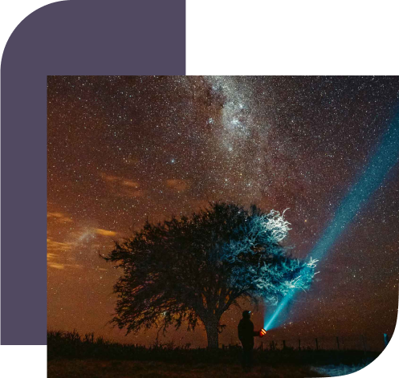

STARGAZERS
"Explora el cielo desde los rincones más remotos:
¡Sumérgete en el Astroturismo Argentino y descubre la belleza oculta del cosmos!"
¿Que es el Astroturismo?
El astroturismo, es un fenómeno en auge, invita a entusiastas de la astronomía a explorar los misterios del cosmos desde una perspectiva única. Este fascinante turismo combina elementos de naturaleza, cultura y ciencia, ofreciendo experiencias inolvidables para aficionados y expertos por igual.
Los invitamos a ver:
"El camino eterno: ESTRELLAS ADENTRO".
